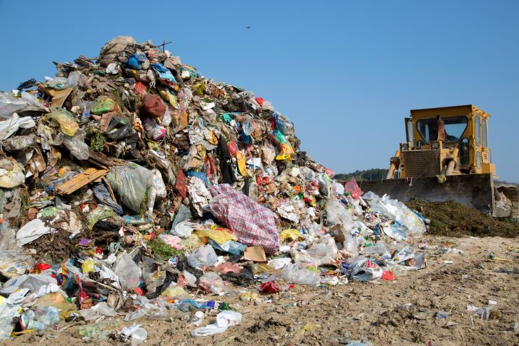
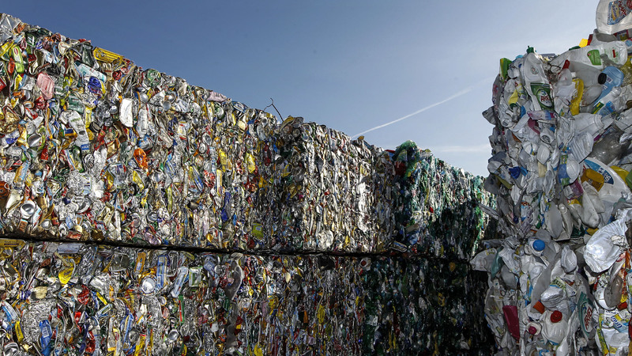
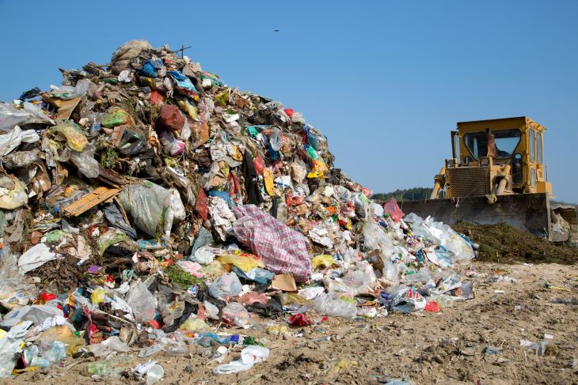
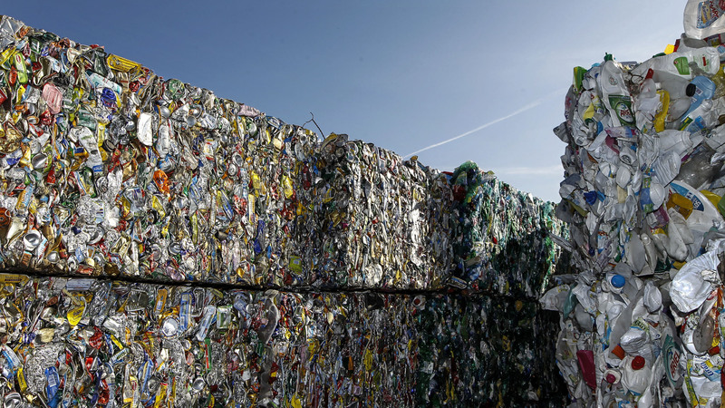

GreenTrack Waste Management
"Waste Not, Want Not – Go Green with GreenTrack!"
Join the Movement for a Cleaner Kenya. We provide efficient garbage collection, increased recycling, and reduced pollution through technology.
A Glimpse of the Challenge
These images represent the different types of waste we encounter daily and the importance of proper waste management.
 


